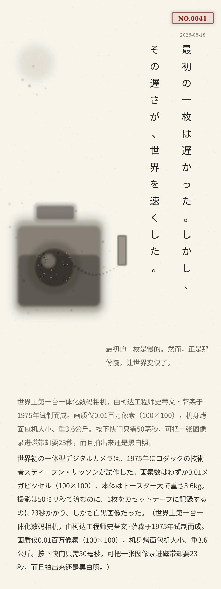

最初の一枚は遅かった。しかし、その遅さが、世界を速くした。
世界初の一体型デジタルカメラは、1975年にコダックの技術者スティーブン・サッソンが試作した。画素数はわずか0.01メガピクセル（100×100）、本体はトースター大で重さ3.6kg。撮影は50ミリ秒で済むのに、1枚をカセットテープに記録するのに23秒かかり、しかも白黒画像だった。（世界上第一台一体化数码相机，由柯达工程师史蒂文·萨森于1975年试制而成。画质仅0.01百万像素（100×100），机身烤面包机大小、重3.6公斤。按下快门只需50毫秒，可把一张图像录进磁带却要23秒，而且拍出来还是黑白照。）